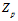
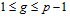
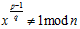
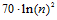
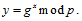
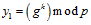
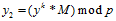
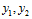
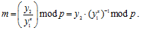

5.2.4. Криптосистема Эль-Гамаля
5.2.4. Криптосистема Эль-Гамаля
Криптосистема Эль-Гамаля основана на проблеме дискретного логарифмирования.
Криптосистема Эль-Гамаля задается с помощью большого простого числа p и целого числа g (являющееся первообразным корнем по модулю p ), степени которого по модулю p порождают все элементы поля : .
Для каждого поля по модулю большого простого числа существуют такие элементы, называемые первообразные корни, и их количество равно функции Эйлера от числа n−1. В общем случае для произвольно выбранного большого числа n эффективного алгоритма поиска примитивного элемента не существует, но такой элемент может быть найден за полиномиальное время, если известно разложение на простые множители числа n−1. Число x является примитивным элементом мультипликативной группы поля тогда, и только тогда, когда  для каждого простого делителя q числа p−1.
Как было доказано Миллером, из обобщенной гипотезы Римана следует существование примитивного элемента меньшего, чем , что дает возможность полиномиального поиска примитивного элемента даже для больших значений n (порядка 1024 бит). Этот алгоритма состоит из перебора первых чисел с проверкой их в соответствии с приведенной выше формулой.
При использовании этого алгоритма на практике возникает вопрос − каким образом находить разложение числа p−1 для последующего поиска примитивного элемента, ведь задача разложения на множители большого числа не имеет эффективных методов решения? Так как выбор большого простого числа в качестве модуля и нахождение примитивного элемента обычно выполняются в рамках одной задачи, то появляется возможность заменить задачу разложения задачей генерации модуля по специальному правилу. Очевидно, что если модуль p − простое число, то (p−1) будет гарантированно иметь в разложении число 2, так как является четным. Остальные сомножители будем выбирать как случайные простые числа требуемого размера с последующим добавлением 1 и проверкой результата на простоту.
Криптосистема Эль-Гамаля работает следующим образом:
1. Получатель выбирает в качестве секретного ключа случайное число x и вычисляет открытый ключ 
2. Отправитель, чтобы послать сообщение абоненту А, выбирает случайное число 1< k <p. Затем вычисляет  и , пара  является шифртекстом, т. е. происходит удвоение размера открытого текста.
3. Абонент А для расшифрования сообщения использует уравнение:
